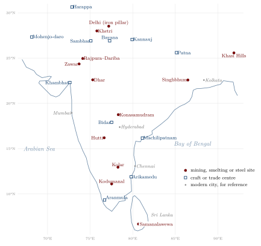
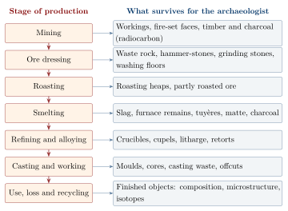

Chapter 4: Ākara: Mines, Ores and the Archaeometallurgy of South Asia¶
4.1 Mines in the Historical Record¶
Every metal described in this volume began as rock in the ground, and every account of Indian metallurgy rests, in the end, on mining. Yet mining is the least documented stage of that history. The Sanskrit word for a mine, ākara (also khani), occurs often enough, and the Arthaśāstra (composite, c. 50 BCE–300 CE) gives the state a superintendent of mines who is to recognise ores by their colour, weight, smell and taste and to control their working (Section 1.4) (Olivelle 2013). But no Sanskrit, Persian or vernacular text describes how a shaft was sunk, how a mine was drained, or how ore was sorted and washed. The miners themselves left no writings, and their names are almost never recorded.
The evidence is therefore archaeological and, for the last two centuries, documentary. Old workings, spoil heaps and slag dumps survive in many parts of the subcontinent; colonial geologists recorded them in the 19th century, often because they were looking for ore that their predecessors had found first (Ball 1881); and from the 1970s archaeologists and metallurgists began to survey, sample and date them. The richest results have come from the lead–zinc–silver mines of the Aravalli hills in Rajasthan, studied by a British Museum project whose work on zinc is described in Chapter 7 (Willies et al. 1984; Craddock 2017). This chapter surveys the great mining districts—the Aravalli lead–zinc belt, the copper belts of Khetri and Singhbhum and the gold fields of Kolar and Hutti—and then explains, for the general reader, the methods by which scientists study the remains of mining and smelting. These methods, grouped under the name archaeometallurgy, lie behind most of the dates and processes reported in the chapters on the metals that follow (Chapters 5–8) (Killick and Fenn 2012).
The record has a paradox at its centre. Modern mining is often the only reason that ancient workings become accessible: a new shaft or open pit cuts through old galleries, exposes timbers and tools, and brings archaeologists to the site. But the same mining destroys what it exposes, and the best-preserved remains of ancient Indian mining are those of districts where the ore is now exhausted or uneconomic. Much of the evidence at Kolar, for example, was lost when the 19th-century companies followed the old workings down and replaced them with their own.
4.2 Recognising and Dating Old Workings¶
An old mine can usually be recognised by its form. Pre-modern miners followed the richest ore and left the rest, so that their workings are irregular, narrow and sinuous, tracking the vein or ore body through the rock; modern mines, driven by explosives and machines, are straight and regular. Where the rock was hard, pre-modern miners broke it by fire-setting: a fire was built against the face, and the heated rock, expanding unevenly, cracked and could be prised away with iron tools. Fire-set surfaces have a characteristic smooth, concave, scalloped profile, quite unlike the marks of drilling and blasting, and the soot and charcoal left behind are datable (Craddock 1995). Softer ores and gravels were dug with picks and hoes, and gold-bearing river sands were simply panned.
Dating such workings is difficult. Mines are holes, not deposits: they contain no stratified sequence of floors and finds, and a working may have been abandoned, reopened and extended many times. The usual approach is to date organic material left inside by the miners—charcoal from fire-setting, wooden props, ladders, bowls and torches—by radiocarbon. Craddock’s team obtained such dates from the Rajasthan mines, showing that mining at Rajpura–Dariba and Zawar had begun by the first millennium BCE (Willies et al. 1984; Craddock 2017). The method has well-known pitfalls. Timber may have been old when it was cut or reused from an earlier structure, so that its date is older than the working (the “old wood” problem); charcoal from a fire-set face dates the fire, but not necessarily the first opening of the gallery; and samples that survive are those that happened to be protected, often in the deepest or wettest parts of a mine. A single date therefore proves little, and a mine’s chronology rests on series of dates combined with the dates of the associated smelting sites and their pottery.
Two further kinds of evidence help. Dumps of crushed rock and discarded ore near the mouth of a mine record the dressing of the ore, and stone hammers, grinding stones and washing floors are often found with them. Slag heaps, which are usually close to the mine or to sources of fuel and water, can be dated by the charcoal they contain and analysed to show what was smelted and how (Section 4.5). Together, mine, dump and slag heap make up the landscape of an ancient mining district, and the most informative studies have treated them as a single system.
4.2.1 Old Workings and Modern Prospecting¶
The first systematic record of old workings was made by the geologists of the colonial state. The Geological Survey of India, founded in 1851 and at first concerned mainly with coal, extended its work in the following decades to metallic ores, and its officers noted old pits, shafts and slag heaps wherever they found them. Valentine Ball’s volume on economic geology in the official Manual of the Geology of India (1881) gathered these observations for the whole subcontinent, district by district, and is still a useful guide to remains that have since disappeared (Ball 1881). The interest of these geologists was practical: old workings were the surest sign of ore, and the pre-modern miners, who had prospected by eye over many centuries, had usually found the outcropping ore bodies first.
The modern mining industry therefore grew, again and again, out of the old. At Kolar the 19th-century companies sank their shafts on the lines of the old workings; at Hutti a British company reopened the ancient mine in the early 20th century, and the field was revived again after independence; in the copper belts of Khetri and Singhbhum and in the Aravalli lead–zinc belt, the slag heaps and old pits directed exploration (Section 4.3). This continuity has a double consequence for the historian. It shows how good the empirical knowledge of the old prospectors was; and it explains why the evidence of their work so often survives only in the descriptions of the people who destroyed it.
4.3 The Major Mining Districts¶
Table 4.1 lists the principal districts whose pre-modern workings have been studied or recorded, and Figure 4.1 shows where they lie, together with the other mining, smelting and craft sites discussed in this volume. Iron ore, which is widespread and was smelted by small groups in many regions, is treated in Chapter 5, and the diamond fields in Chapter 10.

| District | Metals | Pre-modern evidence | Modern working |
|---|---|---|---|
| Zawar (Udaipur, Rajasthan) | Zn, Pb, Ag | Workings from the 1st mill. BCE; zinc retorts (Chapter 7) | Hindustan Zinc |
| Rajpura–Dariba (Rajasthan) | Pb, Ag, Zn | Workings from the 1st mill. BCE; cupellation debris | Hindustan Zinc |
| Khetri belt (Jhunjhunu and Sikar, Rajasthan) | Cu | Old workings and large slag heaps; Ganeshwar copper finds | Hindustan Copper |
| Singhbhum belt (Jharkhand) | Cu | Old workings and slag along the copper belt | Hindustan Copper (Ghatsila) |
| Kolar (Karnataka) | Au | Old workings on the quartz reefs | Mined 1880s–2001; now closed |
| Hutti (Karnataka) | Au | Old workings, some deep | Hutti Gold Mines |
| Krishna valley (Andhra Pradesh, Telangana) | Diamond | Alluvial diggings described by Tavernier (Chapter 10) | Abandoned |
4.3.1 The Aravalli Lead–Zinc–Silver Belt¶
The mines of Zawar and Rajpura–Dariba, and their smelting sites, are described in Chapter 7; here their place in the longer history of mining needs only a few words. They are the best-dated ancient mines in South Asia. Willies, Craddock, Gurjar and Hegde’s survey, published in 1984, showed that the workings had been driven by fire-setting deep into the ore bodies along the strike of the veins, with timber supports and with stopes so large that they must represent centuries of work (Willies et al. 1984). The production of silver from argentiferous galena was the first object, and zinc distillation came much later (Chapter 7). After a long decline, the district was explored again in the 20th century, and the Rajasthan deposits are now among the largest sources of zinc and lead in the world. The state company Hindustan Zinc, formed in 1966, worked them until it was privatised in 2002. It was the opening of modern workings at Zawar and Rajpura–Dariba that made the ancient galleries accessible to the British Museum team.
4.3.2 The Copper Belts: Khetri and Singhbhum¶
India has two major historic copper districts. The Khetri belt runs for some 80 km through the Jhunjhunu and Sikar districts of northern Rajasthan, at the northern end of the Aravallis. Old workings and slag heaps are found at many places along it, and the scale of the slag shows that copper was produced there over a long period. How long is uncertain. The copper objects of the Ganeshwar–Jodhpura culture, found a short distance away and dated to the third and second millennia BCE, suggest that the ores were exploited very early (Chapter 8), but few of the workings or slag heaps themselves have been securely dated, and most of the surviving debris may belong to the first and second millennia CE (Agrawal 2000; Kenoyer and Miller 1999). Copper was still being smelted in the belt in the 19th century, when it was described by British officers and geologists (Ball 1881); the indigenous industry declined as imported copper became cheap, and modern mining was revived after independence by the state company Hindustan Copper, founded in 1967.
The Singhbhum copper belt of Jharkhand follows a shear zone for more than 100 km through the hills of the Chota Nagpur plateau. Here too 19th-century geologists recorded old workings and slag along the belt, and saw in them the best guide to where ore was to be found (Ball 1881). Modern working began in the first half of the 20th century under a British company, the Indian Copper Corporation, with a smelter at Ghatsila, and passed to Hindustan Copper in the 1970s. The age of the old workings has not been established by modern dating.
Where the Harappan cities obtained their copper is a long-standing question that illustrates both the promise and the limits of archaeometallurgy. Three sources are usually considered: the Khetri belt and the Aravallis, close to the Ganeshwar–Jodhpura sites; the copper deposits of Baluchistan and Afghanistan; and Oman, across the Arabian Sea, which Mesopotamian texts name as Magan, a land of copper, and where Harappan pottery and other objects have been found (Kenoyer and Miller 1999). Trace elements and lead isotope ratios can in principle distinguish these sources, and several studies have attempted it. The results so far point to more than one source, varying between sites and periods, rather than to a single supplier; but the scattered sampling of both objects and ores, and the habit of recycling copper, mean that no answer is yet secure. The arsenic present in many Harappan copper objects may in part reflect the character of the ores rather than deliberate alloying, another question that analysis has raised but not settled.
India’s own copper was never sufficient for its needs. From antiquity copper was imported by sea—the Periplus lists it among the imports of western Indian ports (Casson 1989)—and in the 17th century the Dutch East India Company shipped large quantities of Japanese copper to the markets of Gujarat, the Coromandel coast and Bengal (Prakash 1985). The brass and bronze vessels of early modern India were made in part from imported metal, and the history of Indian copper is a history of trade as much as of mining.
4.3.3 Gold: Kolar and Hutti¶
The two great gold fields of peninsular India lie in Karnataka. Both are in ancient volcanic and sedimentary rocks (greenstone belts), in which gold occurs in quartz reefs, and both were worked long before the modern period (Biswas and Biswas 1996; Craddock 1995).
At Kolar, east of Bengaluru, the reefs had been followed by old workings that the 19th-century prospectors found and used as a guide. Reports of the old pits and of local gold-washing were recorded by a survey officer in the early 19th century, and from the 1870s a succession of concessions and companies took up the field; the London mining firm of John Taylor and Sons assumed the management in 1880. The Kolar Gold Fields became one of the deepest mining operations in the world. The main mines followed the Champion reef to depths of more than three kilometres, where rock temperatures and sudden rock-bursts made work extremely dangerous. In 1902 the mines received electric power from a hydro-electric station on the Kaveri at Śivanasamudra, one of the first in Asia. The mines were taken over by the state after independence, passed to the central public-sector company Bharat Gold Mines in 1972, and were closed in 2001 when the cost of working at such depths could no longer be met. How far down the ancient miners went at Kolar, and when they worked, is poorly known, because the old workings were largely destroyed by the modern ones.
Historical Note: Physics at the Bottom of a Gold Mine
The depth of the Kolar mines gave them an unexpected second life in science. More than two kilometres of rock shield the deep levels from almost all the cosmic radiation that reaches the surface, and physicists of the Tata Institute of Fundamental Research, working with colleagues from Osaka and Durham, installed detectors there. In 1965 they reported muons produced deep underground by neutrinos that cosmic rays had generated in the atmosphere—one of the first two detections of such neutrinos, made at about the same time as a similar experiment in a South African gold mine (Achar et al. 1965). Later experiments at Kolar, from the 1980s, searched for the decay of the proton. The underground experiments ended in the early 1990s, some years before the mines closed.
At Hutti, in Raichur district, the old workings are better preserved. They are among the deepest pre-modern mine workings recorded in India, but their age has not been established by published modern dating. Hutti, unlike Kolar, is still worked, by a company owned by the state of Karnataka.
The ancient miners of these fields broke the quartz by fire-setting, crushed it with stone hammers and on grinding stones, and recovered the gold by washing the crushed rock, in which the gold, many times heavier than quartz, settles out. Large numbers of grinding stones and hammer-stones are reported from near old workings in the Deccan gold fields. The same principle of gravity separation was used for alluvial gold.
4.3.4 River Gold and Gold-Washers¶
Much Indian gold came not from reefs but from rivers. Gold weathered out of its parent rock is carried by streams and concentrated in gravels and sands, from which it can be recovered by washing in a wooden dish or trough. Rivers in eastern and central India, in the north-western mountains and in the south were washed for gold, and the name of the Subarnarekha (“streak of gold”) records the practice (Section 8.1). Colonial surveys describe families and communities in Chota Nagpur, Odisha and the central Indian hills who washed the river sands for gold in the dry season, earning a meagre living from small quantities of gold dust (Ball 1881). Their work is almost invisible archaeologically, but it may have supplied much of the gold that circulated within India before the great imports of the early historic period.
4.4 From Ore to Metal: The Chemistry of Ore Treatment¶
Ore as it leaves the mine is a mixture of the valuable mineral with worthless rock (gangue). Before smelting, the mineral must be concentrated, and some ores must be chemically transformed. Each step leaves its own residue, and the residues are the archaeologist’s evidence (Figure 4.2).
4.4.1 Dressing¶
The first step, ore dressing, is mechanical. The ore is broken by hammering and sorted by hand, the rich pieces being kept and the poor discarded; it is then crushed and ground, and the heavy mineral is separated from the light gangue by washing. Galena, sphalerite and the copper sulphides are all much denser than quartz and the other common rock-forming minerals, and gold is denser still, so that washing in a stream of water concentrates them. These operations leave heaps of discarded rock and fine sand, and stone hammers, anvils and grinding stones, near the mine.
4.4.2 Roasting¶
Most of the metal ores of the Aravallis and of the copper belts are sulphides. Sulphide ores cannot be reduced directly by charcoal in the way that oxides can, and they were first roasted: heated in air, on open heaps or in kilns, so that the sulphur burned off as sulphur dioxide and the metal was left as an oxide. For sphalerite, the zinc ore of Zawar, the reaction is
Roasting was slow, it had to be controlled to avoid melting the ore, and the choking fumes made it one of the most unpleasant stages of the work. Roasting sites leave discoloured, sulphur-rich ground and partly roasted ore.
4.4.3 Smelting and Slag¶
In smelting, the roasted or oxide ore is heated with charcoal in a furnace. Carbon monoxide from the burning charcoal reduces the metal oxide to metal, as described for iron and copper in Chapters 5 and 8 below. The gangue, chiefly silica, must also be removed, and it is removed by making it into a molten slag that separates from the metal. Silica on its own melts only at a very high temperature, but combined with iron oxide it forms iron silicate, mainly the mineral fayalite, which melts at about 1200 °C, within the reach of a charcoal furnace:
In iron smelting the iron oxide for the slag comes from the ore itself, which is why bloomery smelting wastes much of the iron. In copper and lead smelting, iron oxide or other fluxes were added, or were already present in the ore, so that the slag would run. Because the smelter needs the slag to be fluid, slag composition is a record of how well he controlled his furnace.
4.4.4 Copper Sulphides and Matte¶
Copper sulphide ores, of which chalcopyrite (a copper–iron sulphide) is the commonest, are the most complex. If they are only partly roasted and then smelted, the product is not copper but matte, a molten mixture of copper and iron sulphides that is heavier than slag and collects beneath it. The matte must then be roasted and smelted again, sometimes several times, before metallic copper is obtained; in simplified form the final stage can be written
Fragments of matte trapped in slag are among the clues that tell an archaeometallurgist that sulphide ores were being worked.
4.4.5 Gold from Quartz¶
Gold occurs as the native metal and needs no smelting, but in reef ores it is often in particles too small to see. Pre-modern miners recovered it by fine grinding and washing, and in some places by amalgamation with mercury, which takes up the gold; the mercury was then driven off by heat. The same technique was used to recover gold from the sweepings of the Mughal mint (Section 8.13). The colonial companies at Kolar used mechanised crushing and amalgamation and later the cyanide process, which dissolves gold from finely ground ore and is the basis of most modern gold extraction. Both mercury and cyanide are deadly poisons, and the tailings of gold mining in India and elsewhere remain a source of contamination.
4.5 Archaeometallurgy: How the Evidence Is Read¶
Archaeometallurgy is the study of past mining and metal production by the combined methods of archaeology, materials science and chemistry (Killick and Fenn 2012; Pollard and Heron 2008). Its starting point is that every stage of production leaves physical traces, and that these traces—far more abundant than finished objects, which were reused, melted down or lost—record the processes that made them. Figure 4.2 sets out the chain of operations and what each stage leaves behind. The main analytical techniques are listed in Table 1.3; this section explains what they are used to find out.

4.5.1 Reading Slag¶
Slag is the most abundant and the most informative waste of metal production, and it is almost indestructible. Its form shows how it left the furnace: slag that was tapped while molten flows out in ropy, layered cakes with smooth upper surfaces, while slag that solidified inside the furnace is irregular and full of charcoal impressions. Its chemical composition, determined by X-ray fluorescence or electron-microprobe analysis, shows what ore and fluxes were used, and its mineral phases, seen under the microscope, show how hot the furnace was and how quickly the slag cooled. Droplets of metal or matte trapped in it reveal what was being made, and how much was lost. Slag also allows a rough estimate of output: if the volume of a slag heap is measured and the ratio of slag to metal is known from analysis, the total production of a site can be estimated, though such figures carry wide margins of error (Bachmann 1982; Craddock 1995). A practical point matters here: slags from the smelting of iron, copper and lead can look alike in the field, and only analysis can tell them apart.
4.5.2 Technical Ceramics¶
Crucibles, retorts, tuyères and furnace linings were made of clay and were in direct contact with the hot charge. Their inner surfaces react with it and preserve a record of what it was: a glassy layer on a crucible wall may contain droplets of metal, traces of zinc, or the oxides of the elements being melted. The analysis of such ceramics has been central to three of the stories told in this volume—the crucible steel of south India and Sri Lanka, whose crucibles were made of specially selected refractory clays (Chapter 6) (Rehren and Papachristou 2003); the zinc retorts of Zawar (Chapter 7); and the cupels and litharge that show silver being refined at Rajpura–Dariba (Craddock 2017). The ceramics themselves are a technical achievement, and their composition shows how potters met the demands of the smelter (Section 12.7).
4.5.3 Metal Objects¶
Finished objects are studied in two ways. Metallography—the examination of a polished and etched section under the microscope—shows the internal structure of the metal: whether it was cast or hammered, annealed or quenched, made of one piece or forge-welded from many. It was by metallography that the wrought and quenched high-tin bronzes of Kerala were distinguished from cast bell metal (Srinivasan and Glover 1995), and that the structure of crucible steel was explained (Chapter 6). Chemical analysis gives the composition of the alloy and its trace elements. Here care is needed: corrosion changes the composition of a metal surface, so that surface analysis by portable X-ray fluorescence, though non-destructive and convenient, can mislead, and reliable figures usually require a small sample drilled from the clean metal beneath. Trace elements such as arsenic, antimony, nickel, silver and bismuth come mainly from the ore, and can group objects made from the same source.
Wrought iron carries a record of its own making. Because bloomery iron was never fully molten, it retains small inclusions of the slag from which it was separated, drawn out into threads by forging. The inclusions preserve much of the chemical character of the smelting slag, and through it of the ore, the furnace lining and the fuel ash; their analysis can distinguish iron made directly in a bloomery from iron refined from cast iron, and can sometimes group iron objects by the region or workshop that smelted them. In South Asia the slag inclusions and the high phosphorus content of bloomery iron, derived from the ores, have been central to the explanation of the Delhi pillar’s resistance to corrosion (Chapter 5) (Balasubramaniam 2000). Steel tells a further story through its microstructure: the proportion and form of pearlite and cementite show its carbon content and how it was cooled, and the banded structures of crucible steel record the segregation of impurities during the slow solidification of the ingot (Chapter 6).
4.5.4 Lead Isotopes and Provenance¶
The most widely used method of tracing metal to its source is lead isotope analysis. Lead has four stable isotopes. One, lead-204, has existed unchanged since the Earth formed; the others, lead-206, lead-207 and lead-208, are produced continuously by the radioactive decay of uranium and thorium. The proportions of the four in an ore deposit therefore depend on the geological age of the deposit and on the uranium and thorium in its source rocks, and different ore fields often have distinctive ratios. Crucially, the ratios do not change appreciably when ore is smelted, refined or alloyed, so that lead in a coin, a weight or a bronze image preserves the “signature” of its ore (Pollard and Heron 2008; Rehren and Pernicka 2008).
The method has limits that its users stress. Ore fields of similar geological age can have overlapping signatures, so that a match shows only that an object is consistent with a source, not that it came from it. Metal was often mixed and recycled, blending signatures. And in copper alloys, the lead may have come from the copper ore or from lead deliberately added, so that it traces the lead and not necessarily the copper. In South Asia the method has been applied to Harappan copper, to coins and to South Indian bronze images (Section 8.6) (Srinivasan 1999), but the reference database of Indian ore fields is still incomplete, and many conclusions remain provisional.
The sources of gold are harder to trace, because gold contains little lead. One approach uses the tiny grains of platinum-group metals (alloys of osmium, iridium and ruthenium) that are often found as inclusions in gold from river gravels but not in gold mined from quartz reefs, so that their presence in an object points to alluvial gold. Another uses the silver and copper contents of native gold, which differ from deposit to deposit, though they are altered by any refining or alloying. It has been suggested that some Harappan gold came from the reef deposits of the Deccan, but this has not been established, and the river gold of the north-western mountains is an equally plausible source.
4.5.5 Analysing Coins¶
Coins are the most closely dated and most numerous metal objects of the historical period, and their analysis is one of the main tools of economic history. Debasement—the reduction of the precious-metal content of a coinage, usually under fiscal pressure—can be read directly from a series of analyses, and the fineness of coins issued in a ruler’s name is a measure of the state of his treasury. Analyses have shown, for example, the decline in the gold content of the later Gupta coinage (Section 8.11).
The oldest method of analysing a coin without damaging it is the measurement of its specific gravity, by weighing it in air and in water—the principle discussed by al-Bīrūnī and reproduced in the Āʾīn-i Akbarī (Section 8.13). Because gold is almost twice as dense as silver and more than twice as dense as copper, the specific gravity of a gold coin gives a good estimate of its fineness, provided that it is an alloy of gold with only one other metal and has no hidden cavities. Modern methods are more precise but have their own pitfalls. Coins of debased gold or silver are often enriched at the surface, either deliberately, by treatments that removed base metal from the surface to make the coin look finer than it was, or by corrosion, which removes copper preferentially; a surface analysis then overstates the fineness. Some methods analyse the whole volume of a coin non-destructively, and others require a tiny sample from a cut edge. The comparison of such analyses with the written standards of the mint—the Arthaśāstra’s prescriptions, Ṭhakkura Pherū’s register of coins and the Mughal assayer’s grades (Sections 8.12 and 8.13)—is one of the places where the textual and the material history of Indian metallurgy can be tested against each other.
4.5.6 Dating Metallurgy¶
Metallurgical sites are dated chiefly by radiocarbon dating of the charcoal used as fuel, which is often trapped in slag and furnace debris and was usually made from young wood, avoiding much of the “old wood” problem of mine timbers. Fired clay from furnaces and crucibles can sometimes be dated by thermoluminescence, which measures the time since the clay was last heated. Iron and steel present a special opportunity: because the carbon in iron smelted or carburised with charcoal comes from the charcoal, the iron itself can in favourable cases be dated by accelerator radiocarbon methods, which need only small samples (Killick and Fenn 2012). Dates from associated pottery, coins and inscriptions complete the picture. The dating of early iron in South Asia (Chapter 5) and of zinc distillation at Zawar (Chapter 7) both rest on radiocarbon series of this kind, and both show why single dates should not be over-interpreted.
4.5.7 Experiment and Ethnography¶
Analysis shows what was made and in what conditions, but not always how. Two further methods help. In experimental archaeology, researchers rebuild furnaces on the excavated pattern and run them, to test whether a reconstruction works and what it produces; Juleff’s experimental smelts in wind-driven furnaces in Sri Lanka showed that the excavated furnaces could have produced high-carbon iron with the monsoon wind alone (Section 5.4) (Juleff 1996). In ethnoarchaeology, researchers record crafts still practised by traditional methods—iron smelting among the Agaria of central India (Elwin 1942), high-tin bronze working in Kerala (Srinivasan and Glover 1995), lost-wax casting at Swamimalai and among the Dhokra casters—as models for interpreting ancient remains. Both approaches need caution: an experiment shows what was possible, not what was done, and a living craft has its own history and is not a fossil of ancient practice.
4.5.8 What Archaeometallurgy Cannot Do¶
Laboratory analysis is sometimes presented as if it could settle any historical question. It cannot. It can show the composition, structure, source and date of materials; it cannot by itself show who made them, under whose authority, for what purpose, or what they meant. The most secure conclusions in this volume are those in which archaeology, analysis and written sources agree (Section 15.5). Sampling also raises ethical questions: drilling a sample from a temple image or a museum object is destructive, however small, and needs the consent of its owners and custodians. Much Indian archaeometallurgy has been carried out jointly by Indian and foreign institutions; its continued growth depends on Indian laboratories, on access to sites before they are destroyed by modern mining, and on the publication of results in full.
4.6 Miners and the Costs of Mining¶
Pre-modern mining in India, as elsewhere, was hard, dangerous and badly rewarded. The narrow, hot, smoke-filled galleries of fire-set mines, the lifting of ore and water by hand, and the roasting and smelting of lead and sulphide ores all took a heavy toll on health. The Arthaśāstra’s state controlled mines as a source of revenue, and for its farms and workshops it envisaged slaves, hired labourers and convicts working off fines alongside free artisans (Olivelle 2013); in later periods the mines of Mewar and of the Deccan were worked for rulers who drew revenue from them, by communities about whom almost nothing is recorded. Specialist mining and smelting groups, like the iron-smelting Agaria (Section 5.9), had low social standing, and their skills did not raise it.
The colonial and modern mines brought new forms of labour. The Kolar Gold Fields drew tens of thousands of workers, most of them Tamil-speaking migrants from the neighbouring districts of the Madras Presidency, many of them from Dalit communities; they lived in company “lines” and worked at great depths for low wages. Silicosis, caused by breathing the fine quartz dust of the gold reefs, was a lasting occupational disease of the field, as it was in the deep gold mines of South Africa, and rock-bursts killed many. The workforce of the fields became a centre of trade unionism and of Dalit political and religious movements in the 20th century. The closure of the mines in 2001 left a large population without its livelihood, amid heaps of cyanide tailings.
Mining also has environmental and social costs that outlast the mines. The slag and spoil of the Aravalli lead and zinc mines, and the soils around old smelting sites, are rich in lead, zinc and cadmium. Much of India’s present mining takes place in the forest and hill regions where Adivasi communities live, and conflicts over land, displacement and consent, of which the Niyamgiri bauxite case in Odisha is the best known, are discussed in Volume 23, Jana–Jāti. The historian of mining has to hold together the ingenuity of the miners, the wealth that their work created for others, and the costs that they and their landscapes bore.
4.6.1 Fuel¶
Mining was only the first claim that metal production made on the land. All the crafts described in this volume depended on fire, and pre-modern fire meant wood, charcoal, dung and crop residues. Smelting iron in a bloomery furnace consumed several times the weight of the iron in charcoal, and charcoal itself was made from a still larger weight of wood; glass furnaces, brick clamps, lime kilns, salt boiling and sugar boiling all required large quantities of fuel. Around major production centres—the iron-smelting regions of central India, the mining districts of the Aravallis—woodland was cut back, and 19th-century observers described the scarcity of fuel as a limit on production. Colonial forest laws, which restricted the access of smelters and charcoal-makers to forests, were partly a response to such pressures and partly a means of reserving timber for the state. These facts are a useful corrective to the idea that traditional technologies were inherently sustainable: they were small in scale by modern standards and used renewable fuels, but they could and did exhaust local resources and harm their workers.
Health and Safety Note
Sulphur dioxide from roasting, lead fume from smelting, quartz dust, and the mercury and cyanide used in gold extraction are all serious hazards. Old workings, spoil heaps and tailings can be unstable or contaminated and should not be entered or disturbed. See also the note in Section 1.1.
What Is Secure and What Is Debated
Secure: the Rajasthan lead–zinc–silver mines were worked from the first millennium BCE, as a series of radiocarbon dates shows; pre-modern miners broke hard rock by fire-setting and smelters relied on iron-silicate slags; and the methods of archaeometallurgy described here can establish the composition, structure and date of materials. Debated or unknown: the age of most workings in the Khetri and Singhbhum copper belts and the Kolar and Hutti gold fields; where the Harappans obtained their copper; and how far lead isotopes can assign Indian metal to particular ore fields while the reference data remain incomplete.